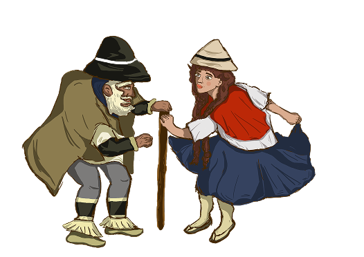
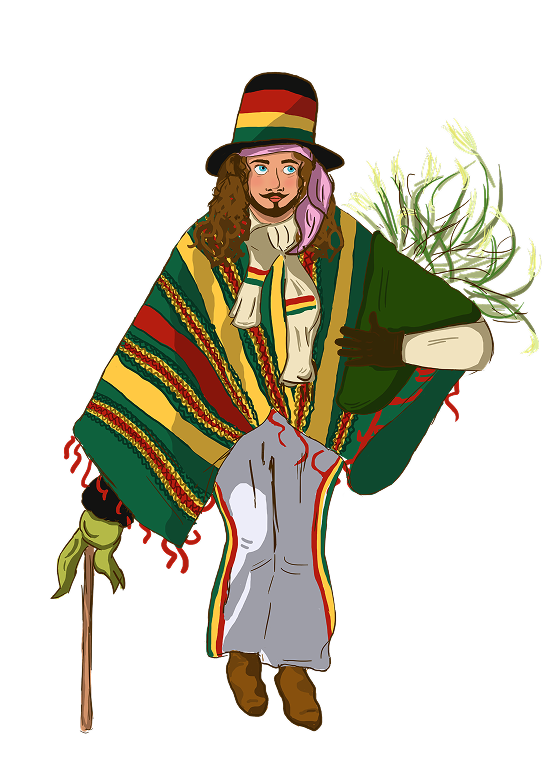
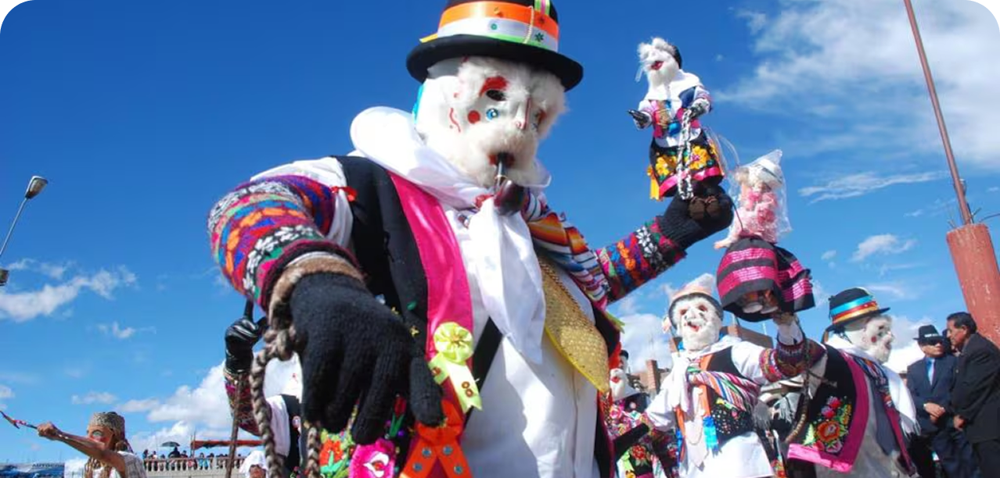
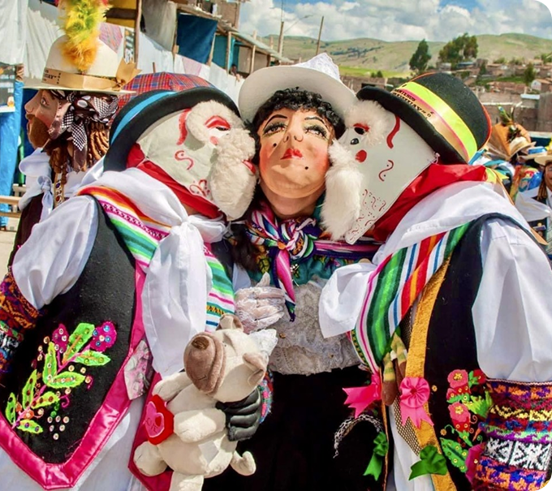

PERU
Tunatada
María e Viejo

María Pichana é uma figura cômica da Tunantada, tradicionalmente interpretada por homens vestidos como mulheres. Com movimentos ágeis e gestos exagerados, ela interage com o público e traz humor para a celebração, representando uma mulher do campo esperta e carismática. Sua presença reforça o caráter satírico da festa, utilizando o riso como forma de entretenimento e crítica social.
O Viejo é um personagem tradicional da Tunantada que representa a velhice por meio de uma performance marcada pelo humor e pela expressividade. Seus movimentos lentos, gestos exagerados e postura curvada criam uma figura caricata que diverte o público durante a celebração.
O personagem Jamille (também chamado de El Boliviano ou associado ao Kallawaya) é uma figura da Tunantada, dança tradicional de Jauja (Peru). Ele representa o especialista em plantas medicinais e o curandeiro andino proveniente do altiplano sul-andino, integrando o conjunto de personagens que satirizam e representam diferentes grupos sociais da época colonial e republicana.
o Jamille representa o “homem do sul andino”, ligado aos conhecimentos tradicionais de cura, especialmente o uso de plantas medicinais, associado aos antigos curandeiros itinerantes conhecidos como kallawayas.
Jamille


A Tunantada é um estilo de música e dança tradicional, da província de Jauja, e foi reconhecida como Patrimônio Cultural do Peru em 2011. Sua origem remonta ao período colonial, quando a população local começou a imitar, de forma satírica, a chegada do vice-rei Francisco de Toledo e sua comitiva. O próprio nome vem da palavra espanhola “tunante”, que significa patifaria, devido ao caráter irônico da dança, que questiona estereótipos sociais e étnicos da época colonial. O desfile conta com personagens mascarados e figurinos marcantes, como o Chuto, Tucumano (argentino), María Pichana e o Velho, Jamille (boliviano), Jaujina e entre outros.
Berço de grandes civilizações andinas, o Peru preserva uma das heranças indígenas mais visíveis da América do Sul. O espanhol convive com idiomas como o quéchua e o aimará, falados por milhões de pessoas. O país atravessou períodos de colonização, conflitos internos e governos autoritários ao longo de sua história.
A Tunantada transforma esse passado em representação cultural. Por meio da sátira, dos personagens mascarados e dos figurinos elaborados, a dança questiona hierarquias herdadas do período colonial. O festival preserva memórias históricas e utiliza o humor como ferramenta de resistência e reflexão social.
